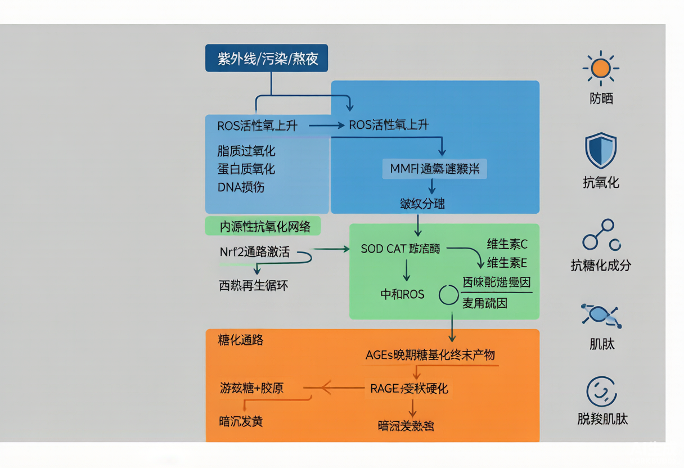

一句话结论（双视角）：工程师：抗氧化不是「加一种抗氧化剂」，而是建一张「可再生的氧化还原网络」——Nrf2/Keap1 内源酶系（SOD、CAT、GPx、GSH）为底盘，VC（水相）+VE（脂相）+阿魏酸（界面/稳定剂）三联完成跨相再生循环；抗糖化则是第二条独立通路（游离糖+胶原→美拉德→AGEs→交联硬化+RAGE 受体激活），必须单独设计靶点（肌肽类截胡醛基、抑制 AGE-RAGE 结合）。两条通路互为放大器：ROS 加速 AGEs 生成，AGEs 经 RAGE 又反过来催化 ROS。产品经理：消费者听得懂的语言是「皮肤像切开的苹果变黄、像弹簧生锈」——氧化对应「暗沉发黄」，糖化对应「松垮发黄」，所以「双抗」叙事天然成立；但市场已出现概念添加泛滥（麦角硫因实测添加量普遍仅 10–50 PPM），宣称必须有可验证的剂量与人体数据支撑，否则是合规与口碑双风险。
一、机理：皮肤为什么会「氧化」和「糖化」
活性氧（ROS）并非全是坏东西——低浓度时是信号分子。问题出在「产耗失衡」。皮肤 ROS 的来源分内外两路：外源以紫外线为最大头（UVA 深达真皮，通过内源光敏剂产生超氧阴离子、H₂O₂、羟自由基），其次为 PM2.5/多环芳烃、臭氧、蓝光与可见光；内源则为线粒体电子传递链泄漏、NADPH 氧化酶、过氧化物酶体与炎症细胞呼吸爆发。2025 年首都医科大学王松灵院士团队在综述中把这套系统描述为「多层级动态网络」：毫秒级的线粒体 ROS 脉冲、分钟级的 Keap1-Nrf2 构象重排、小时级的抗氧化酶转录重编程，共同构成所谓「氧化还原代谢弹性」。这意味着单点补充抗氧化剂的效力天然有限，系统会自己把平衡拉回去。
- 皮肤的酶系防线：超氧化物歧化酶 SOD（超氧阴离子→H₂O₂）、过氧化氢酶 CAT（H₂O₂→水）、谷胱甘肽过氧化物酶 GPx（以 GSH 为还原当量清过氧化物），三者串联构成第一梯队；非酶防线为 VC、VE、谷胱甘肽 GSH、辅酶 Q10、尿酸、硫氧还蛋白等。
- Nrf2/Keap1/ARE 是「总开关」：静息时 Nrf2 被 Keap1-Cul3 复合体锁住并泛素化降解；氧化或亲电应激时 Keap1 半胱氨酸被修饰，Nrf2 解离入核，结合 ARE 元件，启动 HO-1、NQO1、GST、γ-GCS 等 II 相解毒酶与抗氧化酶转录。多酚类成分（EGCG、白藜芦醇、阿魏酸）的主要价值正在于「激活内源系统」，而非单纯体外供氢。
- VC 与 VE 的再生循环是化妆品最经典的协同设计：VE 在脂相截获过氧化自由基，生成 α-生育酚自由基；VC 在水相/界面把 VE 自由基还原回 VE；阿魏酸则同时稳定 VC（抑制其氧化为脱氢抗坏血酸）并被 VC/VE 还原——三者形成闭环，单一成分无法复制这个效应。
- 糖化是独立第二条线：葡萄糖、果糖等还原糖的醛/酮基与胶原、弹性蛋白上的氨基发生非酶促反应（美拉德反应），经 Schiff 碱、Amadori 重排，最终生成不可逆的晚期糖基化终产物 AGEs（如 Nε-羧甲基赖氨酸 CML）。胶原与弹性蛋白代谢极慢、赖氨酸/精氨酸残基丰富，是糖化的头号靶子。
- 糖化后的三把刀（中国香料香精化妆品工业协会 2026 综述口径）：① 交联硬化——AGEs 在胶原分子间强行「焊接」，纤维变脆失去回弹；② 代谢阻断——糖化胶原抵抗 MMP 降解（拆不掉），同时成纤维细胞合成新胶原的能力被抑（造不出），ECM 更新卡壳；③ 受体激活——AGEs 结合 RAGE 受体，激活 NADPH 氧化酶产 ROS，再煽动 MAPK/TGF-β/NF-κB，形成「氧化↔糖化」互相放大的闭环。
- 累积速率：研究证实糖化胶原约在 20 岁左右开始出现，之后每年以约 3.7% 累积，到 80 岁时皮肤 AGEs 可比年轻时高出三到五成——这是「抗糖化」品类可以做长期叙事的科学基础。
产品经理视角：两条通路对应的消费者语言：氧化 → 消费者说「脸色暗沉、发黄、不通透、熬夜脸」；糖化 → 消费者说「脸垮了、没弹性、黄气重、压下去半天回弹不起来」。注意两者在消费者认知里高度重叠（都是「黄」），所以「双抗」是最省教育成本的产品叙事；但工程师必须知道二者靶点完全不同，不能在配方上只做一套抗氧化就宣称「抗糖化」。
二、前沿证据（2025–2026）
- 2025 年 Appl. Sci.(15, 2571) 综述整合 280 项研究，系统盘点化妆品抗氧化剂：确认类胡萝卜素（β-胡萝卜素、叶黄素、番茄红素、虾青素）、酚类（阿魏酸、白藜芦醇、橙皮苷、黄腐酚）、维生素类与藻类/真菌/地衣来源活性物为主要阵营，并明确指出「递送系统与稳定性」是该领域下一阶段的核心命题，而非继续堆新成分。
- Duke 大学 Pinnell 组 2005 年 JID 经典研究（PMID 16185284）仍是最硬的证据：在 15% L-抗坏血酸 + 1% α-生育酚基础上加入 0.5% 阿魏酸，可将化学稳定性显著提升，并把对模拟日晒的光保护倍数从 4 倍提高到约 8 倍（以红斑与晒伤细胞形成评估），同时有效减少胸腺嘧啶二聚体（DNA 损伤标志）形成。该专利已于 2023 年到期。
- VC 浓度存在「饱和天花板」：Pinnell 组 2001 年研究显示皮肤 L-AA 饱和约在 20% 浓度；超过该值不会带来更高皮肤浓度，却显著增加刺激。因此 10–20% 是「有效+可耐受」区间，且配方的 pH 与包装稳定性比标称百分比更能决定实际效果。
- 麦角硫因（Ergothioneine, EGT）是 2026 年最热赛道：人体存在其专属转运蛋白 OCTN1，可将 EGT 主动转运并富集于线粒体等氧化应激高发区域，属于少见的「有专属转运体、可靶向线粒体」的天然抗氧化剂。但行业调研同时指出，市售产品实测添加量普遍仅 10–50 PPM，远低于文献讨论的有效量级，「概念添加」是核心痛点。
- 2026 年的一个明确技术转向：从「外源补充抗氧化剂」转向「激活内源抗氧化系统」（Nrf2/HO-1/NQO1）与「线粒体靶向」——外囊泡/外泌体类、仿生肽激活线粒体自噬（mitophagy）等方向在论坛与临床前研究中频繁出现，但其人体证据等级仍明显低于 VC/VE/阿魏酸。
- 抗糖化临床端：肌肽外用 1%–2% 浓度对改善皮肤暗沉有明确临床效果；脱羧肌肽（肌肽衍生物）兼具抗糖化与抗氧化、稳定性与透皮吸收均优于肌肽；透明质酸+海藻糖组合通过抗炎抗氧化路径抵御 AGEs 损害；牡丹根提取物被发现可抑制 AGEs 形成并阻断 AGE-RAGE 结合。敏感肌建议从 0.5%–1% 起用。
三、工程师配方落地：靶点 → 原料 → 添加量 → 配伍/pH/稳定
下表是可直接落进配方开发单的骨架。核心原则：一条抗氧化网络要「跨相覆盖」——必须有水相成员（VC/GSH/麦角硫因）、脂相成员（VE/CoQ10/类胡萝卜素）和界面稳定成员（阿魏酸），否则只能守住半个战场。
| 靶点 / 通路 | 推荐原料 | 建议添加量 | 配伍 / pH / 稳定要点 |
|---|---|---|---|
| 水相自由基清除 + 胶原促合成（主力） | L-抗坏血酸（VC） | 10%–20%（15% 为经典平衡点） | pH 必须 ≤3.5（非解离态才透皮）；配 1% VE + 0.5% 阿魏酸形成再生循环；无水/低水体系、避光棕色瓶、气密泵头；>25℃ 加速降解，开封后 2–3 月内用完；变橙/棕即失效 |
| 脂相过氧化链式阻断（细胞膜保护） | α-生育酚（VE） | 0.5%–1%（经典 1%） | 油相添加，需 VC 还原再生否则自身成自由基；避免与高浓度金属离子（Fe²⁺/Cu²⁺）共存；建议配 EDTA-2Na 螯合，阻断 Fenton 反应产羟自由基 |
| 界面稳定 + 光保护倍增（协同放大器） | 阿魏酸 | 0.5%–1% | 酚羟基结构，pH 升高易氧化褐变；水溶解度差，用乙氧基二甘醇/丙二醇助溶；吸收 290–330nm，兼具直接光保护与抑 MMP-1、下调 AP-1/NF-κB |
| 内源抗氧化系统激活（Nrf2/ARE） | EGCG/白藜芦醇/姜黄素等多酚 | 多酚总量 0.1%–2%（视单体） | 作用慢但持久（转录级），与 VC/VE 速效互补；多酚易氧化变色，需螯合剂+避光+充氮灌装；注意与蛋白类原料的氢键/鞣制反应导致沉淀 |
| 线粒体靶向抗氧化 | 麦角硫因（EGT） | 文献讨论量级 ≥1000 PPM（0.1%），市售常见 10–50 PPM 属概念添加 | 依赖 OCTN1 转运体主动摄取，水溶性好、耐热耐光、温和无光敏；务必索要原料纯度（≥99%）与第三方功效报告，避免虚标 |
| 抗糖化：截胡醛基（竞争性糖基化抑制） | 肌肽 / 脱羧肌肽 | 肌肽 1%–2%；脱羧肌肽 0.5%–1% | 两性二肽，水溶，pH 5–7 稳定；与 VC 同体系时注意低 pH 下的稳定性窗口；脱羧肌肽透皮与稳定性更优，适合精华/眼霜 |
| 抗糖化：阻断 AGE-RAGE 结合 / 抑制 AGEs 形成 | 牡丹根提取物、HA+海藻糖组合 | 按供应商标示量（通常 0.5%–3%） | 主要走抗炎抗氧化+受体阻断路径，需以 AGEs 抑制体外试验背书；天然提取物注意批次活性标准化与色度、气味对配方感官的影响 |
| 金属离子螯合（预防性抗氧化，最易被忽略） | EDTA-2Na / 植酸 | 0.05%–0.2% | 与所有抗氧化体系强制配伍：螯合 Fe/Cu 阻断 Fenton 反应生成·OH，成本极低但能显著延长体系寿命 |
配方落地三条硬规则：① 只加 VC 不加 VE/阿魏酸 = 只建了半个网络，稳定性与光保护都打折；② pH 是 VC 类产品的生命线，pH 5.5 的 20% VC 实际递送量可能低于 pH 3.0 的 15%；③ 抗糖化不能靠抗氧化「顺带实现」，必须单独引入肌肽类或 AGEs 抑制成分，并有独立的体外/人体证据。这三条是开发评审时的必查项。
四、产品经理市场沟通：数据、语言与宣称边界
- 品类大盘：2025 年中国化妆品全渠道交易额约 1.1 万亿元，国货份额升至 57.37%；精华/精华水赛道 2025 年整体规模约 420.4 亿元、同比 +13.2%（高于化妆品整体 7.8% 的增速），主打紧致抗垮、预防细纹的产品年消费增速达 27.5%——抗氧化/抗初老是增速跑赢大盘的细分。（来源为行业白皮书口径，属第三方测算数据，引用需注明）
- 「双抗」（抗氧化+抗糖化）已成为中高端抗皱产品的主流配方逻辑，行业白皮书称超过 60% 的中高端抗皱产品采用该结构。这意味着「双抗」从差异化卖点退化为入场券，新的溢价点应来自：可验证的添加量、OCTN1/线粒体靶向这类有专属机制的成分、以及人体功效实测数据。
- 消费者语言转换表：ROS → 「让脸发黄的坏东西」；AGEs/胶原交联 → 「弹簧生锈、压下去弹不回来」；Nrf2 激活 → 「让皮肤自己学会抗氧」；VC+VE+阿魏酸 → 「三个搭档互相补位，比单打独斗管用」。避免使用「清除自由基=抗老」这种已被证伪的简化因果。
- 必须主动避开的雷：碘酒/高锰酸钾褪色实验这类伪科学可视化。业内已有多位研发负责人公开指出——溶液褪色只反映体外氧化还原电位，与产品在皮肤上的稳定性、实际浓度、透皮吸收无关，用它做功效演示既误导消费者，也给自己埋下虚假宣传的隐患。
- 证据等级决定话术强度：体外 DPPH/ABTS → 只能支撑「本品具有抗氧化活性」；3D 皮肤模型/离体皮肤 → 可支撑机制宣称；8–12 周人体试验（ITA° 肤色亮度、VISIA 色斑与均匀度、光泽度、皮肤弹性 R0 值）→ 才能支撑「改善暗沉、提升弹性」这类消费者可感知的功效宣称。三者不可混用。
五、合规红线（中国市场）
- 《化妆品功效宣称评价规范》要求抗氧化类宣称须以人体功效评价试验、消费者使用测试或实验室试验（含体外）之一作为依据，并在药监局指定网站公开摘要。证据类型必须与宣称强度匹配：体外数据支撑「属性」，人体数据才能支撑「对消费者的效果」。
- 抗氧化属于可经体外试验支撑的功效，但「抗糖化」并非《化妆品分类规则和分类目录》中的独立功效类别——不要单独宣称「抗糖化」作为功效名，应归入抗氧化/抗皱/紧致等法定功效并做对应评价，避免超范围宣称。
- 「抗老/抗衰」不是法定功效表述，需用「抗皱」「紧致」「舒缓」「改善暗沉」等目录内术语；涉及「修护」需对应人体试验。
- 宣称中引用的市场数据、成分倍数（如「抗氧化力是 VE 的 XX 倍」）须有明确出处与实验条件，行业调研已显示部分麦角硫因产品存在纯度虚标、添加量不足的问题，此类表述一旦被抽检或竞对质疑，风险极高。
- 若产品含防晒剂或宣称辅助防晒：抗氧化剂不得宣称替代防晒（SPF 是法定专属指标），正确表述是「协同防护/帮助减少紫外线带来的氧化损伤」。阿魏酸在部分地区可作辅助 UV 吸收剂，但限量与定位须核对当地法规。
六、行动清单
- 立项前：确认要打的到底是「氧化」还是「糖化」——前者走 VC/VE/阿魏酸+多酚，后者必须加肌肽类；想打「双抗」就两套证据都要有，别用一套抗氧化数据覆盖两条通路。
- 配方端：把 pH（VC 体系 ≤3.5）、螯合剂（0.05%–0.2% EDTA）、包装（棕色+气密/无水）三条写进开发规格书，作为一票否决项而非优化项。
- 原料端：对麦角硫因等热门成分，采购合同里锁定纯度（≥99%）、实际添加量与第三方功效报告，拒绝「概念添加」——这是 2026 年该赛道最大的产品风险点。
- 评价端：研发早期用 DPPH/ABTS/ORAC/TBARS 快速筛选，中期上 3D 皮肤模型 + ROS/GSH/MDA 细胞指标，上市前必做 8–12 周人体试验（ITA°、VISIA、弹性 R0、TEWL），形成完整证据链。
- 宣称端：建一份「证据等级—话术对照表」，明确哪些话只能对外说机制、哪些能说效果；市场部所有可视化实验脚本需经研发与法规双签。
- 待办：下次可深挖「Nrf2 激活剂的体外—人体证据落差」与「线粒体靶向递送（OCTN1/线粒体自噬）的工程可行性」两个子题，作为本主题的第二层延伸。
理论锚点（经典书籍）：董银卯《化妆品配方设计6步》提供配方开发的系统框架（功效体系/增溶与稳定体系）；刘玮《皮肤科学与化妆品功效评价》是功效评价设计的中文权威依据；《Cosmeceuticals》与《Handbook of Cosmetic Science and Technology》给出抗氧化剂与透皮/稳定技术的经典国际口径。本笔记中 ROS/MMP、AGEs/RAGE 的机制结论与上述书籍一致，2025–2026 的前沿证据则来自下方文献列表。
附图

参考资料与出处链接
- Antioxidants to Defend Healthy and Youthful Skin—Current Trends and Future Directions in Cosmetology (Appl. Sci. 2025, 15, 2571，整合280项研究) https://www.mdpi.com/2076-3417/15/5/2571
- Ferulic acid stabilizes a solution of vitamins C and E and doubles its photoprotection of skin (Pinnell 组, JID 2005, PMID 16185284) https://pubmed.ncbi.nlm.nih.gov/16185284/
- 谈糖不色变｜糖化损伤：破坏皮肤ECM稳态、加速肌肤衰老的核心元凶（中国香料香精化妆品工业协会） https://www.caffcimedia.com/feed/7e5yjEqe
- 首都医科大学王松灵院士团队阐述氧化还原动态平衡的多级调控网络（科学网 2025） https://news.sciencenet.cn/htmlnews/2025/11/555415.shtm
- 多酚抵御衰老和光老化的研究（上）：Nrf2/ARE 通路与 II 相解毒酶 https://www.sohu.com/a/309835537_120022973
- 抗氧化功效：化妆品核心机理与科学评价体系（DPPH/ABTS/ORAC/FRAP/TBARS） https://www.bjjcyjs.com/showinfo-1-2778-0.html
- 抗氧化功效实验技术全解析：从体外筛选到人体验证的完整评价路径与合规实践 https://www.sohu.com/a/1057176089_122683503
- 起底网红精华油评测背后的流量骗术（碘酒褪色实验为何不能证明抗氧化力） https://www.163.com/dy/article/KASU1JFS0518L346.html
- 2026麦角硫因护肤对比解析：OCTN1 转运体、纯度与添加量行业现状 https://new.qq.com/rain/a/20260828A0840N00
- 2026年护肤品权威测评：有效添加量与功效实测成品牌分水岭（360化妆品网） https://m.360xh.com/xinwen/3260/73744.html
- 2026双抗焕亮精华水行业白皮书：抗氧化+抗糖化双靶点护肤新范式（行业测算数据） https://trendsma.com.cn/trendsma/detail/50025
- Ferulic Acid 成分档案：Pinnell 配方（15% L-AA + 1% VE + 0.5% 阿魏酸, pH 2.5–3.5） https://skincare-database.com/ingredients/ferulic-acid
- Vitamin C Serums: Does Percentage Actually Predict Stability?（VC 浓度饱和与稳定性分析 2026） https://marketingorscience.com/articles/skincare/2026/04/vitamin-c-serum-stability
- SKINTELLECT Vol.4 No.1（IADVL 西孟加拉邦分会）：皮肤抗氧化防御与内源酶系随龄下降 https://www.iadvlwb.org/documents/Volume_4_skintellect_1_pdf.pdf
- 2026全球皮肤生物学论坛：线粒体修复与靶向递送抗衰技术（OCTN1 与线粒体自噬） http://gsmc.org.cn/jingcaihuigu/249.html
- 外囊泡抗光老化：NRF2 抗氧化通路、miR-146a 抗炎与 TIMP-1 护胶原三道防线 https://www.sohu.com/a/1028961117_122701548
- Natural Product Modulation of Oxidative Stress in the Treatment of Extrinsic Skin Aging（Chem. Res. Chin. Univ. 2026 综述） https://link.springer.com/article/10.1007/s40242-026-6027-y
- Antioxidant Capacity: DPPH Radical Scavenging Assay（EU 655/2013 宣称证据等级说明） https://oxfordbiosciences.com/services/dpph
- 董银卯《化妆品配方设计6步》
- 刘玮《皮肤科学与化妆品功效评价》
- Cosmeceuticals（化妆品功效成分经典教材）
- Handbook of Cosmetic Science and Technology